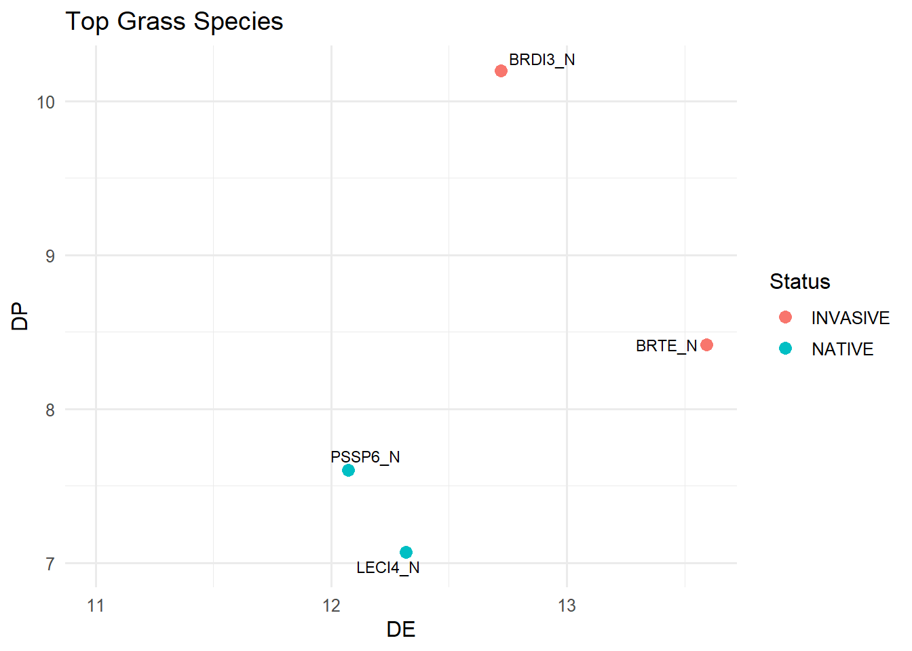
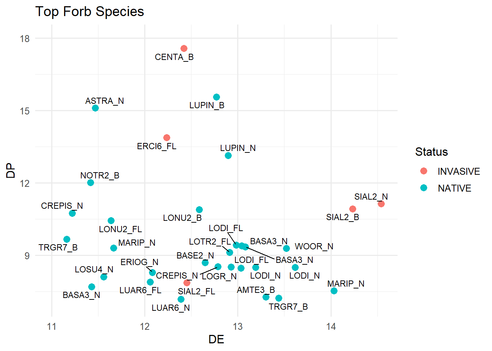
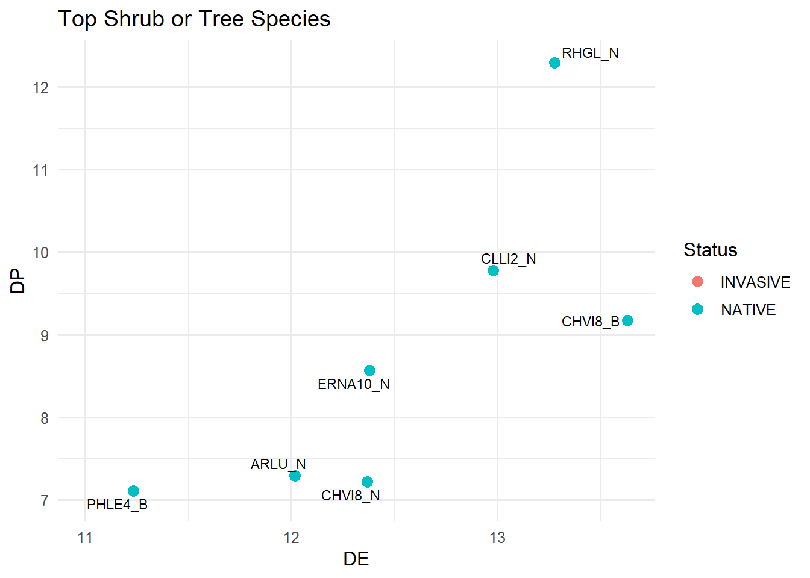
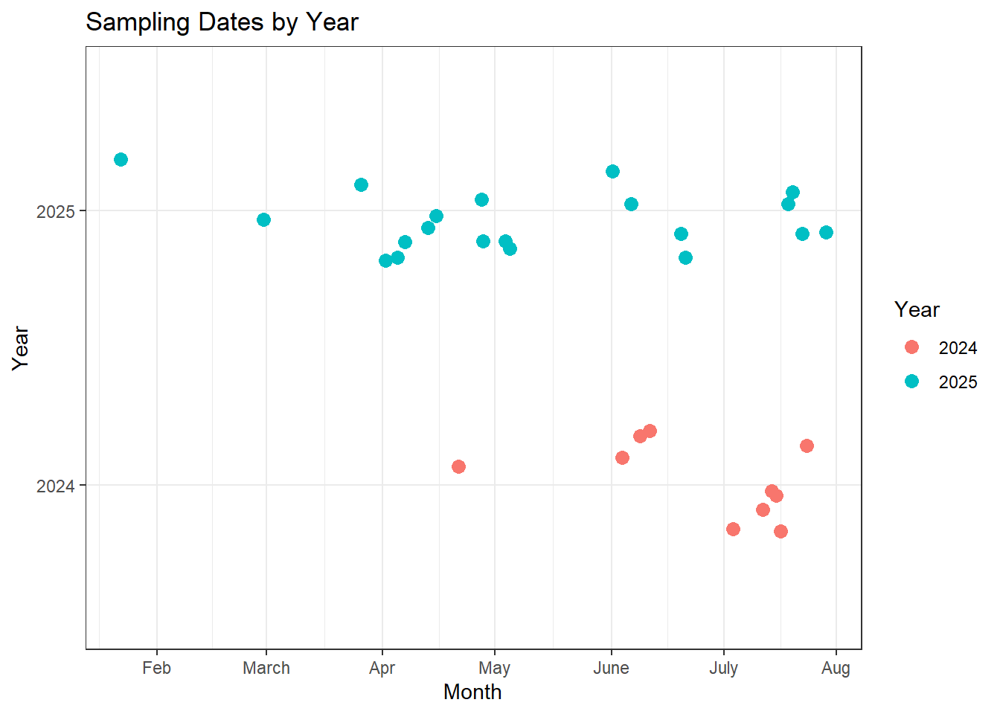

Between 2024 and 2025, we sampled 109 transects across six different vegetation communities in the canyon. Most of these were in Grassland (58 transects), with fewer in Intermediate (13), Riparian (12), Scabland (11), Shrubland (11), and Sparse (4). The number of transects in each community reflected how much of the study area that community covered, based on Landfire data. Since Grassland makes up more than 85% of the site, it naturally had the most sampling, while the other communities only covered about 1–5% each. As you all know, there are plenty of rocky(sparse) areas that sheep often use, but because they were tough to get to and didn’t usually have much plant diversity, we ended up sampling fewer transects within these communities. Still, I think the sampling we did was enough to capture any variation in that community.
In our first year, we focused heavily on the grassland community and sampled transects more strictly in proportion to the area each vegetation community covered. Grassland was sampled two to three times a week, with fewer visits to the other communities, which didn’t give us much coverage outside grassland. In the second year, we shifted more effort toward the other vegetation communities to better capture their phenology timing.
The first graph shows the timing of sampling in both 2024 and 2025, and the second gives a better picture of how the sampling timing overlapped for each vegetation community in both years. Overall, I think we did a good job filling gaps in the smaller vegetation communities, giving us a clearer picture of how phenology timing varies across them.
I also wanted to share a visual of how our transects were distributed throughout the canyon. In the first year, since we didn’t yet have collar data on the sheep’s summer movements, we decided to use a boundary and stay within two miles of the river, prioritizing points closer to the river over those further away on top of the canyon.
In the second year, we refined the boundary using GPS data from the previous summer. The overall shape of our boundary stayed similar but narrowed further into the canyon. The extra floats were a big help for reaching those tougher spots at the bottom of the canyon (thanks again to everyone who helped with those!). Overall, I’m really happy with how the distribution turned out. The only areas with lighter sampling were on the West side where access was limited, but the floats helped a lot to fill in some of those gaps. The points that are outside the study area on the left are a few sampling spots that we did up jackknife.
Code
library(ggmap)river <-st_read("C:/Users/Alexis Means/Documents/Project/JohnDayRiver_shp/JohnDayRiver.shp",quiet =TRUE)jd <-st_read("C:/Users/Alexis Means/Documents/Project/Nutrition Sampling/2025_GRTS/25_StudyArea/25_LJD_StudyArea_all.shp",quiet =TRUE)jd <-st_transform(st_zm(jd), crs =32610)river <-st_transform(st_zm(river), crs =32610)river <-st_intersection(river, jd)ggplot() +geom_sf(data = jd, fill =NA, color ="black", size =0.6) +geom_sf(data = river, color ="blue", size =0.8) +geom_point(data = transect,aes(x = easting, y = northing, color = PVT),size =2,alpha =0.8 ) +scale_color_manual(values =c("Grassland"="green","Riparian"="blue","Sparse"="brown","Intermediate"="yellow","Scabland"="purple","Shrubland"="red" )) +labs(title ="Sample Locations within the John Day",x ="Easting",y ="Northing",color ="Vegetation Type" ) +theme_minimal() +theme(legend.position ="right")
Timing of “Green-up”
Overall timing
Next, I wanted to look at the overall timing of green-up in the canyon. The first graph combines results from both summers. As expected, the peak of “New” growth is around March–April, while the biggest transition to “Cured” plants occurs around May–June. It’s neat to see this line up with what Emily found regarding the birth pulse, with the most new (and highly nutritious) forage coinciding with peak lambing.
I also compared the timing between years. Overall, the trends look fairly similar. Anecdotally, I thought green-up in 2025 might have moved faster due to lower rainfall, but that doesn’t seem to be reflected in the month-to-month observations.
(P.S. The graphs for this section are interactive. If you are interested, you can hover over each box to see the actual percentages of each group and compare them across months.)
# Prepare the datadf_plot <- comp %>%count(Year, Month, Pheno) %>%group_by(Year, Month) %>%mutate(prop = n /sum(n))# Base ggplotp <-ggplot(df_plot, aes(x = Month, y = prop, fill = Pheno,text =paste("Phenology:", Pheno,"<br>Month:", Month,"<br>Year:", Year,"<br>Proportion:", scales::percent(prop)))) +geom_col() +scale_y_continuous(labels = scales::percent) +labs(title ="Phenology Timing Split by Year", y ="Proportion", x ="Month", fill ="Phenology stage") +facet_wrap(~Year, ncol =1) +theme_minimal()# Convert to interactive plotly plotggplotly(p, tooltip ="text")
Timing by Vegetation Community
I was curious to see how green-up timing varied across the different vegetation communities, especially in the riparian areas. The timing in Grassland, Intermediate, and Shrubland communities was fairly similar, while Scabland and Sparse areas progressed the fastest. As expected, the Riparian areas showed a slower progression through green-up compared to the other communities, likely providing more nutritious forage into late June or early July—just as lactation is hopefully slowing for many of the ewes.
Code
pvt_comp <- comp %>%count(PVT, Month, Pheno) %>%group_by(PVT, Month) %>%mutate(prop = n /sum(n)) %>%ungroup()p2 <-ggplot(pvt_comp, aes(x = Month, y = prop, fill = Pheno,text =paste("Vegetation community:", PVT,"<br>Phenology:", Pheno,"<br>Month:", Month,"<br>Proportion:", scales::percent(prop)))) +geom_col() +scale_y_continuous(labels = scales::percent) +labs(title ="Phenology Timing Across Vegetation Types", y ="Proportion", x ="Month", fill ="Phenology stage") +facet_wrap(~PVT, ncol =2) +theme_minimal()ggplotly(p2, tooltip ="text")
Quality Metrics
All results in this section are based on the 2024 samples. The 2025 quality samples are still being processed. Once they’re complete, we’ll have much more information, especially for the species observed in the smaller vegetation communities. I’ve also included a key for each section so that no one has to guess the species codes.
Top Grass Species
The first graph shows the overall trend in quality metrics for different grasses that we observed. The dashed lines represent the nutritional requirement for a lactating female sheep (Digestible Energy “DE” = 11.5, Digestible Protein “DP” 7.5). In theory, any species falling in the upper-right quadrant meets these nutritional requirements. That said, these metrics don’t account for biomass, so take them with a grain of salt, some species may still make a substantial contribution to the total suitable biomass when available in larger quantities.
I’m still working on biomass predictions, which will help determine how much suitable forage exists within the areas we sampled before scaling up to the landscape level. I hope to have those results soon.
This graph is a zoomed-in look at the previous one, focusing only on the species that landed in the upper right quadrant. As expected, cheatgrass(BRTE) and ripgut brome (BRDI3) came out as the top for grass species with the highest quality metrics, with bluebunch wheatgrass(PSSP6) and basin wildrye (LECI4) not far behind.
(this one is not sorry)
Code
library(ggrepel) # optional, for non-overlapping labels# Create plotggplot(grass, aes(x = DE, y = DP)) +geom_point(aes(color = Status), size =3) +# points colored by Status# Label each pointgeom_text_repel(aes(label =paste(Spp, Pheno, sep ="_")), size =3) +# uses ggrepel to avoid overlap# Set axis starting pointsxlim(11, max(grass$DE) +0.5) +ylim(7, max(grass$DP) +0.5) +labs(title ="Top Grass Species",x ="DE",y ="DP",color ="Status" ) +theme_minimal(base_size =12)

Top Forb Species
Looking at the forbs is a bit more chaotic because of the larger number of species observed. More species meet both the DE and DP thresholds, but a substantial number still fall below those nutritional requirements.
It is interesting to see that most of the species that fall above both the DE and DP thresholds are various Lomatiums and Balsamroots which are everywhere in the spring and typically what we observed the sheep snacking on the most during our hours of observation. There also is several phenologies of the Lupine species—but obviously those aren’t edible for the sheep.
Code
# Create plotggplot(forb, aes(x = DE, y = DP)) +geom_point(aes(color = Status), size =3) +# points colored by Status# Label each pointgeom_text_repel(aes(label =paste(Spp, Pheno, sep ="_")), size =3) +# uses ggrepel to avoid overlap# Set axis starting pointsxlim(11, max(grass$DE) +0.5) +ylim(7, 18) +labs(title ="Top Forb Species",x ="DE",y ="DP",color ="Status" ) +theme_minimal(base_size =12)

Top Shrub Species
Lastly I lumped all of the Tree/Vine/Shrubs species into one group to compare.
# Create plotggplot(shrub, aes(x = DE, y = DP)) +geom_point(aes(color = Status), size =3) +# points colored by Status# Label each pointgeom_text_repel(aes(label =paste(Spp, Pheno, sep ="_")), size =3) +# uses ggrepel to avoid overlap# Set axis starting pointsxlim(11, max(grass$DE) +0.5) +ylim(7, max(grass$DP) +0.5) +labs(title ="Top Shrub or Tree Species",x ="DE",y ="DP",color ="Status" ) +theme_minimal(base_size =12)

It was interesting to notice that DP values stayed pretty low across most species, no matter the functional group or phenology stage. This matches up with what Katey was seeing in Asotin Creek. I’m hoping the suitable biomass measurements will give us a better idea of how this population does so well even when many of the plants don’t seem all that nutrient-rich. My guess is that the sheer volume they’re able to consume of some of the species has a lot to do with it.
Invasive vs Native Species
In this section, I wanted to compare the quality metrics of the native and non-native (invasive) species observed within our transects, focusing specifically on the grasses. The first graph is similar to the sections above but separates native and non-native grass species across all phenological stages.
Although more non-native grass species meet the nutrient requirements than native species (two versus one, lol), the quality metrics of the native species appear to remain higher throughout the later phenological stages.
Code
# ggplot with facetsinvasive <-ggplot(grass, aes(x = DE,y = DP,color = Status,text =paste0("Spp: ", Spp,"<br>Pheno: ", Pheno,"<br>Part: ", Part,"<br>Status: ", Status,"<br>DE: ", round(DE, 2),"<br>DP: ", round(DP, 2) ))) +geom_point(size =3) +facet_wrap(~Status, scales ="fixed") +# same x and y for both facetsgeom_vline(xintercept =11.5, linetype ="dashed", color ="gray50") +geom_hline(yintercept =7.5, linetype ="dashed", color ="gray50") +labs(title ="Grass Quality Metrics by Status",x ="DE",y ="DP" ) +coord_cartesian(xlim =c(9, 14), ylim =c(-2, 12)) +# set same x and y limitstheme_minimal(base_size =12)# Convert to interactive plotlyggplotly(invasive, tooltip ="text")
I also looked at whether the percentage of non-native species observed at our transects increased at any point during the season. Overall, the number of non-native species remained fairly consistent throughout the year, with a small spike in the spring. However, since much fewer transects were sampled in April compared to any other month, it’s unclear whether this pattern accurately reflects conditions across the landscape at that time.
Code
status <- plant %>%select(Spp, Status, FunctionalGroup)df <- comp %>%left_join(status, by ="Spp")df <- df %>%mutate(Pheno =na_if(Status, "NA")) %>%filter(!is.na(Status)) %>%mutate(PVT = dplyr::recode(PVT,`672`="Grassland",`682`="Riparian",`668`="Scabland",`669`="Shrubland",`674`="Intermediate",`660`="Sparse"))df %>%count(Month, Status) %>%group_by(Month) %>%mutate(prop = n /sum(n)) %>%ggplot(aes(x = Month, y = prop, fill = Status)) +geom_col(position ="dodge") +scale_y_continuous(labels = scales::percent) +labs(title ="Status Composition based on Month",x ="Month",y ="Proportion",fill ="Status" ) +theme_minimal()
Lastly, I examined how native and non-native species compared across different vegetation communities. The patterns were fairly consistent across communities, although I did observe a slightly higher abundance of non-native species in riparian areas, which I assume is likely due to increased disturbance from animal traffic or erosion.
Code
df %>%count(PVT, Status) %>%group_by(PVT) %>%mutate(prop = n /sum(n)) %>%ggplot(aes(x = PVT, y = prop, fill = Status)) +geom_col(position ="dodge") +scale_y_continuous(labels = scales::percent) +labs(title ="Status Composition based on Vegetation Type",x ="Potential Vegetation Type",y ="Proportion",fill ="Status" ) +theme_minimal()
Fecal Collections
This section shows a timeline of when our fecal samples were collected across both seasons. To simplify the visualization, I condensed multiple observations from the same date into a single point to highlight the overall timing of sampling. On most sampling days, at least two to three samples were collected from a group when available, and on some days we encountered multiple groups in different areas of the canyon. These instances are still represented by a single datapoint on the first graph.
Overall, I think we did a good job with the timing of our fecal collections throughout the summer. There is, however, a gap in the first two weeks of the season in both years, which makes sense since this period coincides with our priority of monitoring lambs during the beginning of the birth pulse. Because we have a substantial number of samples on either side of this gap, I am not overly concerned; the surrounding samples should still provide a solid understanding of the sheep’s feeding habits during that time frame.
Code
f <-"C:/Users/Alexis Means/Documents/Project/Nutrition Sampling/VegDatabases/Fecal.xlsx"fecal <-read_excel(f, "Sheet1")fecal.time <- fecal %>%filter(!ID %in%c("25_045", "25_061")) %>%mutate(DATE =as.Date(suppressWarnings(as.numeric(DATE)), # convert Excel numbers to Dateorigin ="1899-12-30"# Excel date origin ) ) %>%filter(!is.na(DATE)) %>%# remove rows where DATE is NAdistinct(DATE, .keep_all =TRUE) %>%# keep only one row per DATEmutate(DOY =yday(DATE),Year =factor(year(DATE)) )ggplot(fecal.time, aes(x = DOY, y = Year, color = Year)) +geom_jitter(height =0.2, size =3) +# jitter vertically within each Yearscale_x_continuous(breaks =c(1, 32, 61, 92, 122, 153, 183, 213),labels =c("Jan", "Feb", "March", "Apr", "May", "June", "July", "Aug") ) +labs(title ="Sampling Dates by Year",x ="Month",y ="Year",color ="Year" ) +theme_bw()

Lastly, this plot shows the locations of all the samples we collected, both from capture and across both field seasons. I’m happy with the coverage and distribution we were able to achieve during both capture and summer sampling. I think there is a good range in sample collection times throughout the year as well as how they are spread throughout the canyon.
Code
fecal.loc <- fecal %>%filter(!is.na(LAT) &!is.na(LONG)) %>%filter(!ID %in%c("25_045", "25_061", "25_048")) %>%st_as_sf(coords =c("LONG", "LAT"), crs =4326) # convert to sfjd <-st_transform(st_zm(jd), crs =4326)river <-st_transform(st_zm(river), crs =4326)river <-st_intersection(river, jd)ggplot() +geom_sf(data = jd, fill =NA, color ="black", size =0.6) +geom_sf(data = river, color ="blue", size =0.8) +geom_sf(data = fecal.loc, aes(color = QUALITY), size =2, alpha =0.8) +labs(title ="Sample Locations within the John Day",x ="Longitude",y ="Latitude",color ="Sample Freshness" ) +theme_minimal() +theme(legend.position ="right") +scale_x_continuous(breaks =pretty(range(st_coordinates(jd)[,1]), n =3) ) +scale_y_continuous(breaks =pretty(range(st_coordinates(jd)[,2]), n =3) )
Next Steps
I’m getting really close to finalizing my biomass predictions. Right now, I’m refining the linear regression models to make sure they’re accurately predicting unclipped biomass before I can use the FRESH model to predict suitable biomass at each of the sampled transects.
I’m still processing the quality samples from this summer, but I should have everything ground and submitted for analysis before Thanksgiving. Hopefully, we’ll have the 2025 quality results back shortly following that. In the meantime, I can start building most of my models using the 2024 quality results and rerun them once the 2025 results are available.
I’ve also been working on extracting and reprojecting the remaining covariates I’ll include in my GAM (the nutritional landscape map). It’s mostly a tedious process, but I’m almost done and will soon be ready to build the model.